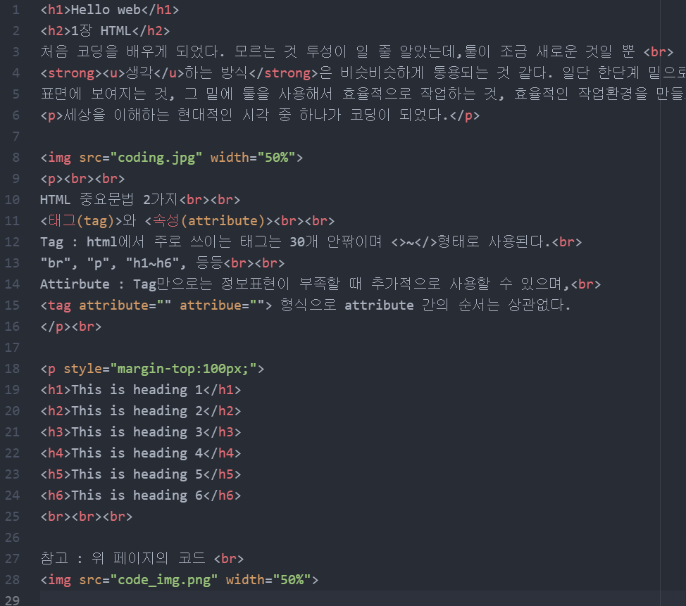

부모태그와 자식태그 그룹화
- ol은 ordered list
- ul은 unorderd list
- ul과ol 모두 li의 부모태그입니다
리스트는 항상 그룹화 되어있죠.
HTML
내용
처음 코딩을 배우게 되었다. 모르는 것 투성이 일 줄 알았는데,툴이 조금 새로운 것일 뿐
생각하는 방식은 비슷비슷하게 통용되는 것 같다. 일단 한단계 밑으로 페이지를 이루는 요소들을 보고 있다.
표면에 보여지는 것, 그 밑에 툴을 사용해서 효율적으로 작업하는 것, 효율적인 작업환경을 만들기 위해 컴퓨터가 이해할 수 있는 코드를 만드는 것, 컴퓨터가 실제 전기신호를어떻게 받아 상호작용 하는지까지
세상을 이해하는 현대적인 시각 중 하나가 코딩이 되었다.

HTML 중요문법 2가지
<태그(tag)>와 <속성(attribute)>
Tag : html에서 주로 쓰이는 태그는 30개 안팎이며 <>~형태로 사용된다.
"br", "p", "h1~h6", 등등
Attirbute : Tag만으로는 정보표현이 부족할 때 추가적으로 사용할 수 있으며,
(tag attribute ="" attribute="")형식으로 attribute 간의 순서는 상관없다.
코딩을 하는 것보다 더 중요한 것은 의미에 맞게 효율적인 코딩을 해야한다는 것이다.
(대부분의 것들이 이미 코드로 만들어져 있다. 이를 찾는 것은 어려운 일이 아니다.)
같은 결과를 내더라도 쓰임에 맞지 않는 방식은 복잡할 뿐더러 정보로써 가공가치가 떨어진다.
예를 들어, 오류를 수정할 때 가독성이 떨어진다거나, 불필요하게 코드 양이 많아진다거나
다른 프로그램들에서 활용될 때 제 기능을 못한다거나(검색엔진예시)
This is heading 1
This is heading 2
This is heading 3
This is heading 4
This is heading 5
This is heading 6
정보구조화 태그
모든 정보를 구조화하는 html의 약속
, html, head, body 형태가 모든 웹페이지의 기본구조이다.
meta charset="utf-8" 여기서 utf-8은 8비트 유니코드 읽기형식이다. 한글은 utf-8로 표현된다.
(0과 1의 디지털신호에서 우리 눈에 보이는 글자이미지 형식으로 변환하는 약속, 인코딩디코딩)
html 태그의 제왕 a태그
a태그는 링크를 연결할 때 사용한다. 바로 이렇게
새탭열기는 이렇게
마우스 올리면 툴팁
(href=hypertxt+referance)
참고 : 위 페이지의 코드
